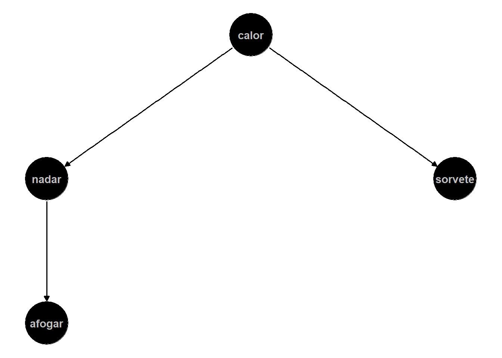

Resolução da lista 3
Curso de inferência causal
Seção 1 - Questões conceituais e teóricas
1. Correlação, Causalidade e Variáveis de Confusão
- A correlação entre X e Y é definida por
\[ \text{Corr}(X, Y) = \frac{\text{cov}(X, Y)}{\sigma_x \sigma_y} = \frac{E[(X - \mu_x)(Y - \mu_y)]}{\sigma_x \sigma_y} \]
e possui as seguintes propriedades:
- o valor de \(\text{corr}(X, Y)\) está sempre entre -1 e 1 (normalizada);
- \(\text{corr}(X, Y) = \pm 1\) quando X e Y tem uma perfeita relação linear positiva ou negativa; e
- \(\text{corr}(X, Y) = 0\) sugere que não há relação linear entre X e Y.
- A correlação entre afogamentos e sorvetes não pode ser interpretada como causal. Uma variável confundidora, que pode causar tanto o maior número de afogamento quanto o maior consumo de sorvete, pode ser simplesmente a temperatura alta que faz no país, como mostra a DAG.
- A presença de variáveis de confusão impede a interpretação causal de uma correlação observada por criar outros caminhos entre o tratamento e resultado, o que gera um viés. Para isolar o efeito causal, é necessário bloquear ou cortar a relação entre a variável confundidora e o tratamento. No caso do exemplo, podemos controlar o calor para que reste apenas o efeito de tomar sorvete sobre afogamentos ou então aleatorizar o tratamento (tomar sorvete).
2. Framework de resultados potenciais
\(Y_i(1)\) é o resultado potencial do indivíduo \(i\), caso ele receba o tratamento e \(Y_i(0)\) é o resultado potencial caso o mesmo indivíduo \(i\) não receba o tratamento. Eles são chamados potenciais porque qualquer um dos dois resultados pode acontecer, mas nunca podem ser observados ao mesmo tempo.
A equação de chaveamento é dada por
\[ Y_i = \begin{cases} Y_i(1), se D_i = 1 \\ Y_i(0), se D_i = 0 \end{cases} \]
- O problema fundamental da inferência causal é que, como só podemos observar um dos resultados potenciais, não podemos estimar diretamente o efeito causal do tratamento \(\delta_i = Y_i(1) - Y_i(0)\) no indivíduo. É um problema de dado faltante pois não temos o contrafactual.
3. Parâmetros de interesse: ATE, ATT e ATU
- As definições são dadas por
\[ ATE = E[Y_i(1) - Y_i(0)] = E[Y_i(1)] - E[Y_i(0)] \] \[ ATT = E[Y_i(1) - Y_i(0)| D_i = 1] = E[Y_i(1)| D_i = 1] - E[Y_i(0)| D_i = 1] \] \[ ATU = E[Y_i(1) - Y_i(0)| D_i = 0] = E[Y_i(1)| D_i = 0] - E[Y_i(0)| D_i = 0] \]
O ATE é o efeito calculado em toda a população, ATT é o efeito calculado apenas nos tratados e o ATU é o efeito calculado apenas nos não tratados.
\[\begin{align*} ATE &= E[Y_i(1) - Y_i(0)] \\ &= p * E[Y(1) - Y(0)|D = 1] + (1 - p) * E[Y(1) - Y(0)|D = 0] \\ &= p * ATT + (1 - p) * ATU \end{align*}\]
ATE = ATT = ATU quando o tratamento é aleatorizado. Nesse contexto, a aleatorização garante a independência dos resultados potenciais do tratamento (\((Y(0), Y(1)) \perp D\)), tornando os grupos de tratamento e de controle comparáveis e eliminando os vieses.
\(D_i\) seria a participação da família no HISP (1 se a família aderiu e 0 se não aderiu ao programa). \(Y_i\) seria as despesas anuais per capita da família com saúde. O ATE mediria quanto, em média, a adesão ao HISP reduziria os gastos anuais com saúde para qualquer família da população, caso o teste fosse aplicado aleatoriamente.
4. Viés de seleção e o desafio do contrafactual
\[\begin{align*} SDO &= E[Y(1)|D=1] - E[Y(0)|D=0] \\ SDO &= \underbrace{E[Y(1)|D=1] - E[Y(0)|D=1]}_{\text{ATT}} + \underbrace{E[Y(0)|D=1] - E[Y(0)|D=0]}_{\text{Viés de seleção}} \end{align*}\]
O viés de seleção representa a diferença entre o grupo de tratamento e o grupo de controle em características que afetam o resultado, mesmo sem o tratamento. Quando \(E[Y(0)|D=1]\) e \(E[Y(0)|D=0]\) são diferentes, significa que os grupos não são comparáveis antes do tratamento e teriam resultados diferentes mesmo sem o tratamento. Ele surge quando indivíduos se auto selecionam para o tratamento pois a auto seleção é guiada por características do indivíduo que também afetam o resultado \(Y\).
- Viés de seleção em \(Y^0\): acontece quando a escolha do tratamento está relacionada à \(Y(0)\) (o que acontece sem o tratamento), ou seja, quando o grupo de tratamento e de controle já diferem no ponto de partida, mesmo sem o tratamento.
- Um exemplo pode ser um curso de capacitação para aumento de salário. O grupo de tratamento pode ser formado por pessoas que já ganhavam pouco.
- Viés de seleção em \(Y^1\): acontece quando a escolha do tratamento está relacionada à \(Y(1)\) (o que acontece em resposta ao tratamento), ou seja, quem participa do tratamento tem resultados melhores ao tratamento.
- Um exemplo pode ser uma bolsa de estudos oferecida a alunos que tiram boas notas. Os alunos que já são bons terão resultados ainda melhores com a bolsa
- Viés de seleção nos ganhos (\(Y^1 - Y^0\)): acontece quando a escolha do tratamento está relacionada aos ganhos individuais (\(Y^1 - Y^0\)), ou seja, quem participa do tratamento são os indivíduos que se beneficiam do tratamento (ganho positivo).
- No contexto do HISP, a adesão ao programa por famílias mais preocupadas com saúde representa um viés de seleção em \(Y^0\), pois essas famílias já teriam gastos reduzidos com saúde mesmo sem o tratamento (maior atenção a prevenção). O viés tem sinal negativo (\(E[Y(0)|D=1] < E[Y(0)|D=0]\)), superestimando a redução nos gastos.
Seção II - Exercícios aplicados
5. Aplicação da notação de resultados potenciais
O tratamento \(D_i = 1\), caso a família participe do programa e \(D_i = 0\) caso contrário. \(Y_i\) é o resultado, ou seja, o percentual de dias letivos que a criança da família \(i\) frequentou a escola. \(Y_i(1)\) é a frequência escolar da criança que participou do programa e \(Y_i(0)\) é seu contrafactual, a frequencia escolar caso essa mesma criança não tivesse participado do programa.
O efeito causal individual para uma criança específica seria a diferença dos resultados potenciais \(Y_i(1) - Y_i(0)\). Não podemos calcularesse valor na prática pois nunca podemos observar o contrafactual.
O contrafactual seria a frequência escolar da criança que participou do programa, caso não tivesse participado. Não conseguimos observar qual teria sido a frequencia escolar da criança participante do programa que compareceu em 92% dos dia letivos, caso ela não tivesse participado do programa.
O ATE mediria o efeito do programa sobre toda a população, ou seja, quanto o programa aumenta a frequencia escolar para todos. Caso esse efeito fosse positivo e estatisticamente significativo, um formulador de políticas públicas teria evidências de que o programa causa o aumento da frequencia escolar e poderia expandí-lo para o restante da população.
6. SDO, ATE e vié em dados observacionais
O valor de R$ 450 observado corresponde ao SDO, pois é a diferença simples do salário dos que participaram do curso (\(E[Y(1)|D=1]\)) dos que não participaram (\(E[Y(0)|D=0]\)).
A auto seleção gera viés nesse cenário: dado que o SDO foi positivo, podemos argumentar que quem decide fazer o curso já tende a ser mais escolarizado, motivado e ambicioso e teria salários melhores mesmo sem o curso. Nesse caso, \(E[Y(0)|D=1] > E[Y(0)|D=0]\) e o viés tem sinal positivo, ou seja, o resultado observado é superestimado em relação ao verdadeiro valor do efeito causal.
Para que o coeficiente do curso seja uma estimativa do efeito causal é necessário que não exista nenhuma outra variável confundidora, ou seja, que não haja nenhuma outra variável fora escolaridade e experiência prévia que afete tanto o salário quanto a participação no curso, tornando os grupos de tratamento e controle comparáveis antes do curso. O coeficiente de R$ 280 é menos enviesado mas ainda pode ser enviesado.
7. Aleatorização como solução para o viés de seleção
A aleatorização preconiza que \((Y(0), Y(1)) \perp D\), ou seja, os resultados potenciais não dependem do tratamento (qual grupo o indivíduo participa), o tratamento foi atribuído por sorteio, independente de qualquer outra característica.
A hipótese de independência diz que \(E[Y(0)|D=1] = E[Y(0)|D=0] = E[Y(0)]\) e \(E[Y(1)|D=1] = E[Y(1)|D=0] = E[Y(1)]\), tornando os grupos de tratamento e controle comparáveis e zerando o viés de seleção.
A aleatorização bloqueia o caminho entre as variáveis de confusão e o tratamento, fazendo com que o efeito causal do tratamento no resultado fique isolado.
Mesmo em um experimento aleatório, pode ser útil incluir covariáveis que são bons preditores da variável dependente Y na regressão para diminuir a variância do erro da estimativa, melhorando sua precisão. Além disso, caso a aleatorização ocorra de forma condicional a alguma variável (estratificada) , é importante incluí-las na regressão.